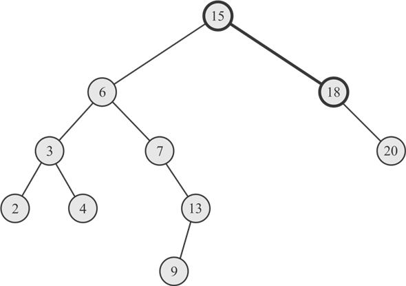
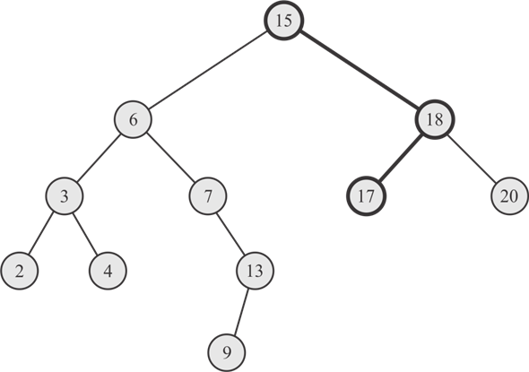
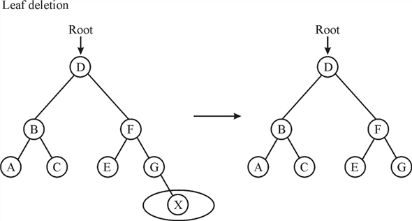
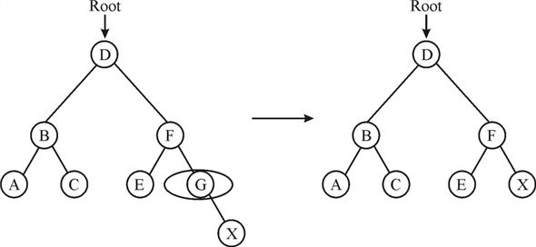
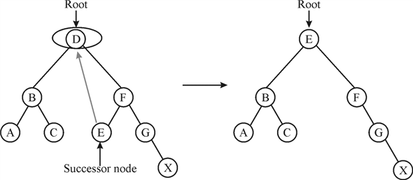

To insert a new node z into tree T, the RECURSIVE-TREE-INSERT procedure calls itself until it finds a suitable node at which the new node z must be inserted.
• The initial call of the procedure is TREE-INSERT (T.root, z).
• That is, initially, x is a root node.
• If the tree T is empty (i.e. if initially x = = NIL), the procedure inserts the new node z as root (i.e. x = z).
• If the tree is not empty, the procedure recursively calls itself until a node is found.
• The new node z is inserted at the node that the procedure finds.
Recursive version of TREE-INSERT procedure is as follows:
RECURSIVE-TREE-INSERT(x, z)
1. If x = = NIL
2. x=z
3. elseif z. key < x. key
4. if x.left-child  NIL
NIL
5. RECURSIVE-TREE-INSERT (x.left-child, z)
6. else
7. z.parent = x
8. x.left-child = z
9. elseif z.key  x.key
x.key
10. if x. right-child NIL
11. RECURSIVE-TREE-INSERT (x.right-child, z)
12. else
13. z.parent = x
14. x.right-child = z
Consider the following binary search tree for inserting any particular node:

Consider TREE-INSERT () algorithm provided in section 12.3. Suppose one have to insert 17 in above binary search tree. The number of nodes examined in inserting a particular node is as follows:
• At first store root node reference in any temporary variable.
• Now inside the while loop check current node 15 is NIL or not. The current node is not NIL, so compare the current node 15 with the node which has to insert that is 17.
• The current node is smaller than the node which has to be inserted, so control moves to right child 18.
• Now, again check whether current node 18 is NIL or not. The current node is not NIL, so compare the current node 18 with the node which has to insert that is 17.
• The current node is larger than the node which has to be inserted, so control moves to left child of 18.
• The left child of current node 18 is NIL therefore 17 inserted as left child of 18.
Therefore, total 2 nodes are examined to insert 17 into the node of binary search tree.
Consider the following binary search tree for searching any particular element:

Consider ITERATIVE-TREE-SEARCH () algorithm provided in section 12.2.
The following steps search the node 17:
• During search, compare the first key value of the root node with search value that is compare 15 with 17.
• The key value of root node 15 is smaller than the search value that is 17, so control move to right child of root.
• Again compare the current node value 18 with the search value 17. The current node value is greater than search value, so the control move to left child of current node 18.
• Now, again compare the current node value 17 with the search value 17. The current node value exactly matches with the search value, so the control returns to the calling function.
Therefore, total 3 nodes are examined during searching a 17 key value node in above tree.
Conclusion
When 17 has to be inserted in above binary search tree Figure1 then only 2 node are examined whereas When 17 has to be search in above binary search tree Figure 2 then 3 node are examined.
Hence, from this it can be conclude that number of node examined while searching a node is one more than inserting that node in binary search tree.
A binary search tree is built in such a way that the right child must be greater than the parent and the left child must be less than the parent. Therefore, sort a set of numbers by building a binary search tree and print using tree walk ( or tree traversing).
The algorithm to sort and print set of numbers using binary search tree is as follows:
TREE-SORT (A)
1. for i =1 to n
2. TREE-INSERT( T, A[i]) //let T be an empty binary search free
3. INORDER-TREE-WALK(T.root)
TREE-INSERT (T, z)
1. y = NIL
2. x = T.root
3. while x NIL
4. y = x
5. if z.key < x.key
6. x = x.left
7. else x = x.right
8. z.p = y
9. if y = = NIL
10. T.root = z // tree T was empty
11. elseif z.key < y.key
12. y.left = z
13. else y.right = z
INORDER-TREE-WALK (x)
1. if x ≠ NIL
2. INORDER-TREE-WALK (x.left)
3. print x.key
4. INORDER-TREE-WALK (x.right)
Worst case running time analysis for TREE-SORT:
If the linear chain of numbers (numbers in ascending or descending order) is to be inserted, TREE-INSERT takes worst case running time.
That is, in the worst case, TREE-INSERT checks the nodes proportional to height of the tree and inserts a node in time.
If array A contains ‘n’ numbers in ascending order or descending order in each iteration of for loop, TREE-INSERT executes in time proportional to height of the tree.
Thus, the for loop executes overall in (1(1st iteration)+2(2nd iteration)+…+n(n th iteration))
=
=
Hence, the worst case running time for TREE-SORT is
.
Best case running time for TREE-SORT:
If the set of nonlinear numbers (numbers neither in ascending nor in descending order) is to be inserted, TREE-INSERT takes best case running time.
That is TREE-INSERT inserts a node in  time.
time.
If array A contains ‘n’ nonlinear numbers, the for loop executes n times and each time TREE-INSERT executes in log n time. Overall, the for loop executes times.
Hence, the best case running time for TREE-SORT is
 .
.
TREE-DELETE algorithm in Binary Search Tree:
• Binary Search Tree is a special type of data structure which is implemented by using linked list.
• It has a special property that for each node its left sub tree has values smaller than that node and right sub tree has values larger than that node.
• In Binary Search Tree, TREE-DELETE algorithm has node (node to be deleted) with two children, it could choose nodeas its predecessor rather than its successor.
• In this TREE-DELETE algorithm, there are three conditions implemented for deleting nodein TREE-DELETE algorithm of Binary Search Tree:
• Let the z is deleting node.
Case 1: When deleting node has no child.
• If z has no child, then that node is simply deleted and child to its parent is set to NULL.
• Example: Deleting node X from the tree.

Case 2: When deleting node has a child.
• If has only one child then, get the value from its only sub tree to replace with
• And then delete it.
• Example: Deleting node G from the tree.

Case 3: When deleting node has two children.
• If z has two children, after calling TREE-DELETE on, it will delete the node z and place the successor node of z at the position of node z.
• And, to get the successor of node z, find the minimum value node from right child nodes.
• Example: Deleting node D from the tree.
